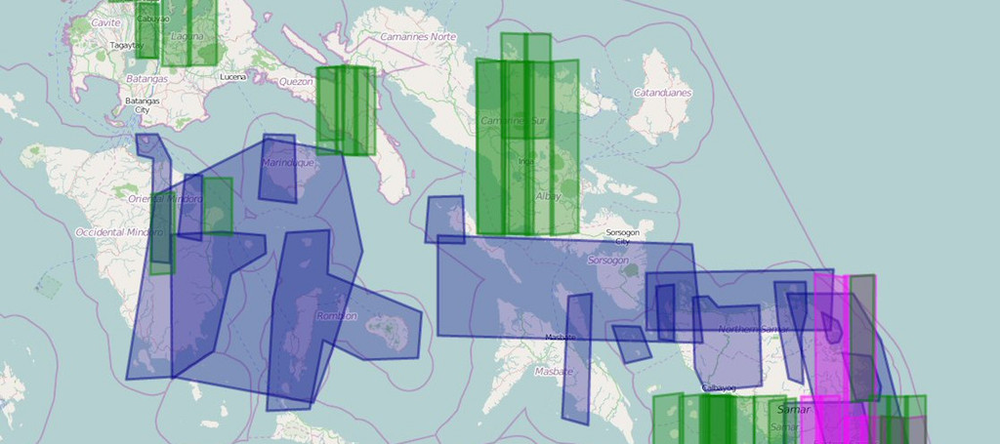

<section class='hide-mobile contain'>
  <div class='liner clearfix center fill-darken2 dark pin-top col12'>
    <h2 class='pad2'>
      Humanitarian OpenStreetMap Team Summit, April 30 - May 2.
    </h2>
  </div>
  <ul class='slider clearfix pin-top col12'>
    <li></li>
    <li></li>
  </ul>
</section>

<section class='show-mobile fill-light center pad2 space-bottom2'>
  <h2 class='space-bottom1'><a href='http://hot.openstreetmap.org'>Humanitarian OpenStreetMap Team Summit</a>!</h2>
  <h3 class='quiet'>HOT gathering together</h3>
</section>

<section class='hide-mobile clearfix limiter col12'>
  <div class='pad4y'>
    <h2>HOT gathering together</h2>
  </div>

  <div class='col6 margin3 space-bottom4'>
    <div class='col12 pad4 center keyline-all space-bottom4 clearfix'>
      <h3>Sign up for updates</h3>
      <p class='quiet prose'>Keep up to date on the HOT Summit</p>
      <div><h2><a href="https://lists.openstreetmap.org/listinfo/hot">HOT mailing list</a></h2></div>


    </div>
  </div>
</section>

<script>
$(function(){
    $('.slider').bxSlider({
        pager: false,
        controls: true,
        auto: true,
        captions: true
    });
});
</script>
